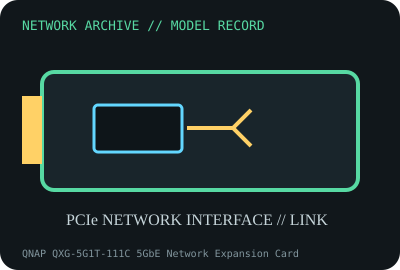

[ MODEL-SPECIFIC NETWORK HARDWARE RECORD ]
QNAP QXG-5G1T-111C 5GbE Network Expansion Card
Single-port 5GBASE-T PCIe adapter using a Marvell AQtion controller. Specifications are tied to this named product; confirm the physical label, revision and source documentation.

IDENTIFICATION: Verify exact PID/model, revision, label and host support. The catalog separates nominal PHY/link specifications from measured throughput; no benchmark is asserted unless explicitly recorded.
Model-specific specifications and compatibility
| Subcategory | Ethernet adapters |
|---|---|
| Exact product/model | QNAP QXG-5G1T-111C 5GbE Network Expansion Card |
| Bus, ports and physical interface | PCI Express Gen 3.0 x1; one 8P8C/RJ-45 port; low-profile bracket installed and full-height plus QNAP NAS brackets included. |
| PHY, radio or optical interface | Marvell AQtion AQC111C; NBASE-T 5GBASE-T, 2.5GBASE-T, 1000BASE-T and 100BASE-TX auto-negotiation. |
| Nominal rate (not measured) | One port: 100 Mb/s, 1, 2.5 or 5 Gb/s nominal negotiated link rates. QNAP specifies Cat 5e or better for 5GbE; no one-flow payload rate is inferred. |
| Measured throughput | No specimen benchmark is claimed. Record cable category/length, peer, negotiated rate, OS, driver, MTU, test tool and duration for measured results. |
| Driver, OS and firmware | QNAP documents Windows and Linux with the appropriate driver plus QTS/QuTS hero compatibility for listed NAS models. On Linux, driver availability depends on kernel/distribution; confirm VID:PID and QNAP driver package before deployment. |
| Platform/media compatibility | Requires PCIe slot with x1 lane, a supported OS/NAS and 5G-capable link partner; link falls back to a shared lower rate. Low-profile card shape and brackets do not guarantee a NAS chassis whitelist. |
| Variant warning | Exact model QXG-5G1T-111C uses AQC111C; do not assume another QXG 5G card has the same controller, bracket or OS support. Confirm hardware label, PCB, controller and included bracket set. |
Revision, operation and measurement notes
Exact model QXG-5G1T-111C uses AQC111C; do not assume another QXG 5G card has the same controller, bracket or OS support. Confirm hardware label, PCB, controller and included bracket set.
QNAP documents Windows and Linux with the appropriate driver plus QTS/QuTS hero compatibility for listed NAS models. On Linux, driver availability depends on kernel/distribution; confirm VID:PID and QNAP driver package before deployment.
No specimen benchmark is claimed. Record cable category/length, peer, negotiated rate, OS, driver, MTU, test tool and duration for measured results.
Archival, ESD and preservation notes
Log card serial/MAC, controller marking, bracket and driver build. Disconnect power and handle by edges; protect PCIe fingers and RJ-45 contacts from contamination and store in antistatic shielding.
Retain source provenance and the revision/date of each supporting document. Store public records without credentials, personal information or other secrets.
Primary manufacturer and standards sources
- QNAP QXG-5G1T-111C hardware specificationsPrimary manufacturer or standards reference; confirm exact part label, revision, and platform qualification.
- QNAP QXG-5G1T-111C product and downloadsPrimary manufacturer or standards reference; confirm exact part label, revision, and platform qualification.
- IEEE 802.3 Ethernet standardsPrimary manufacturer or standards reference; confirm exact part label, revision, and platform qualification.
Manufacturer source links are provided for the stated model or exact product family; use the board label and the official revision-specific compatibility list for final qualification.